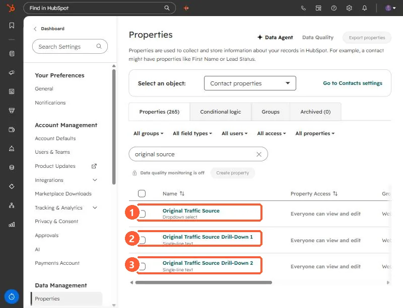
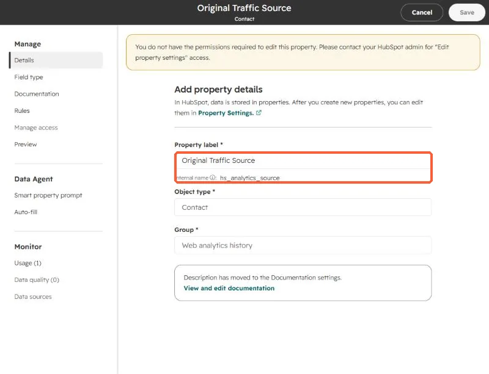
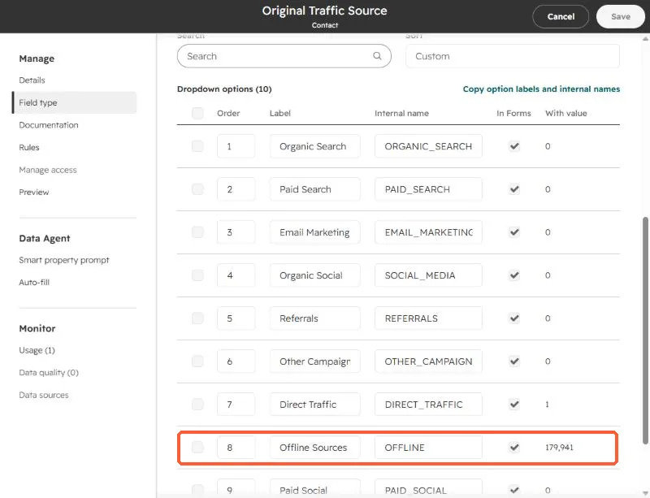
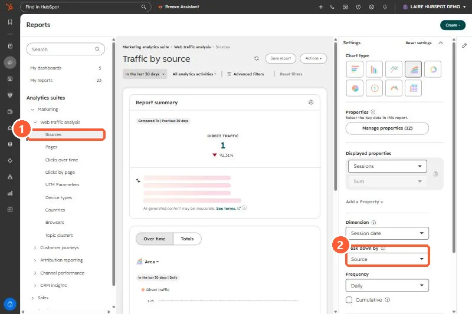
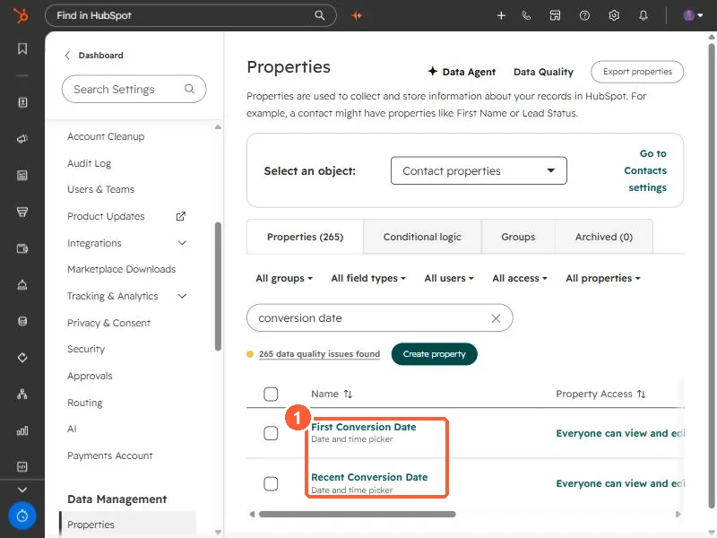
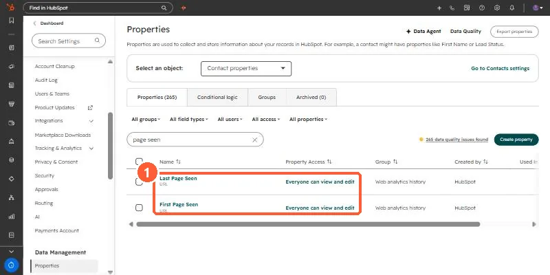

Short answer
Original Traffic Source is the first known web source of a contact and Latest Traffic Source is the most recent. Each has two drill-down properties with the detail (search engine, referring domain, utm_campaign, email name). Offline Sources means there was no tracked web visit, not how the record was created: for that, use the Record Source property. There is also an AI Referrals source for visits from assistants like ChatGPT, Claude and Perplexity. Conversion properties (First conversion, Recent conversion) and page properties (First page seen, Last page seen) are set by HubSpot from forms and the tracking code.
1. The traffic source properties
Search contact properties for "original source" to see Original Traffic Source and its two drill-downs:


The internal name is hs_analytics_source, in the Web analytics history group. Companies and deals associated with contacts mirror these properties.


2. Every source value and its drill-downs
| Source | Drill-down 1 | Drill-down 2 |
|---|---|---|
| Organic search | Search term (if available) | Search engine site |
| Paid search | utm_campaign | Search term (if available) |
| Email marketing | utm_campaign | HubSpot email name (utm_content) |
| Organic social | Social media site | utm_campaign |
| Paid social | Social media site | utm_campaign |
| Referrals | Referring domain | Referring URL |
| AI Referrals | AI platform domain, such as chatgpt.com or claude.ai | utm_campaign |
| Direct traffic | Entrance URL | None |
| Other campaigns | See HubSpot's source definitions | |
| Offline sources | No tracked web visit; see Record Source | |
The UTM parameters come from tracked links. See the tracking URL builder.
3. Offline Sources, and what to use instead
Open the property to see each value and how many records hold it. In my demo portal most contacts are Offline Sources (internal value OFFLINE) because they came from an import:


Offline Sources is a bucket for records with no tracked web source. It does not say whether the record came from an import, an integration, the mobile app or a person typing it in. HubSpot's KB points to the Record Source property for that, which exists on every object.
- Mostly imports: add your own source property on the import so you can tell lists apart. See imports.
- Mostly integrations: check whether the app can set a source, or have a workflow set one.
- Entered by hand: report it as its own category instead of lumping it into Offline Sources.
4. Editing sources
HubSpot sets Original Traffic Source from the first known web source, and Latest Traffic Source can update many times. You can change the source value by hand, or with a workflow's Edit record action on Professional or Enterprise. You cannot edit the drill-down properties by hand, and changing a source clears its drill-down values. Editing the original source overwrites what tracking recorded, so keep it for real corrections.
5. AI Referrals
AI Referrals counts visits from AI assistant domains such as chatgpt.com, claude.ai and gemini.google.com. General search domains do not count: a click from Google's results is still organic search. It shows as its own row in the Sources report (1) when there is traffic, broken down by source (2):


Filter contacts where Original or Latest Traffic Source is AI Referrals and break down by Drill-Down 1 to compare platforms. For where your brand appears in AI answers, see AEO prompts.
6. Conversion and page properties
- First conversion and First conversion date: the first form the contact submitted. Recent conversion and Recent conversion date: the latest. Companies have matching properties based on any associated contact.
- First page seen and Last page seen: the first and last URLs the contact viewed on your site, from the tracking code. Last referring site looks at the last page viewed.




A useful view: Recent conversion date in the last 7 days for fresh leads, and First conversion to see which form brought people in. Page properties only fill in if the tracking code is on the page, see installing the tracking code.
7. What is changing for 2027
- AI Referrals is a real channel to report on. It is now one of the ten source values, with the AI platform in Drill-Down 1. Add it to source reports and lead source dashboards.
- Record Source answers the offline question. HubSpot recommends it over Offline Sources for how a record was created, on every object.
- UTMs matter more. Several drill-downs, including AI Referrals' second one, come from
utm_campaign. Tag the links you share.
Common questions
What does Offline Sources mean?
No tracked web visit came before the contact was created. Check Record Source to see whether it was an import, integration, the mobile app or manual entry.
Why is a visit from ChatGPT not showing as AI Referrals?
Only AI-specific domains count, and the visit has to be tracked by the HubSpot tracking code.
Can I change a contact's original source?
Yes, by hand or with a workflow on Professional and Enterprise, but the drill-downs are cleared and cannot be edited.
Where does a company's source come from?
Companies and deals mirror the source properties of associated contacts.
Sources
- HubSpot Knowledge Base: Understand Original and Latest traffic source properties
- HubSpot Knowledge Base: Use the record source property
- HubSpot Knowledge Base: Update and filter contacts using traffic source properties
- HubSpot Knowledge Base: Understand HubSpot's traffic sources
- HubSpot Knowledge Base: HubSpot's default contact properties
- HubSpot Knowledge Base: HubSpot's default company properties